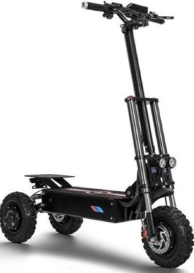

Для вашего удобства мы добавили каталог для более комфортного ознакомления, но прежде советуем прочесть
классификацию электросамокатов
Виды электросамокатов
Существует множество различных видов электрических самокатов.
К таким видам самокатов сейчас можно отнести большой перечень устройств,
значительно отличающихся друг от друга по устройству, но имеющих один
принцип работы и предназначение.
По количеству колес электрические самокаты делятся:
Двухколесные электросамокаты. Это наиболее распространенная конструкция,
имеющая невысокую стоимость и повышенную надежность. Такие самокаты
имеют небольшую массу, компактные размеры, универсальны в использовании,
обладают высоким КПД. Основным их недостатком является необходимость поддерживать
равновесие.Для новичков это вызывает некоторые проблемы при управлении этим средством
передвижения. Важной особенностью исполнения самоката на двух колесах является то, что
нет дополнительного места для размещения аккумуляторов. Они расположены под декой.
Трехколесные электрические самокаты с двумя задними колесами. Такая конструкция
является более сложной и громоздкой, служащей для долгого и комфортного передвижения. Она уступает
двухколесным моделям по габаритным размерам, но выигрывает в запасе хода и мощности.Конструкции с
сиденьем и широкой декой можно использовать даже для поездок за городом. Многие модели электросамокатов
снабжают маленьким дополнительным колесом для поддержки и разгрузки рамы.

Трехколесные самокаты с двумя передними колесами. Это малораспространенная и необычная
конструкция. Для передвижения на таком электрическом самокате необходимо наличие специальных навыков
вождения. Эта модель является гибридом Сигвея и электрического самоката.Преимуществом таких электросамокатов
является повышенная маневренность. Минимальный комфорт во время езды можно отнести к их недостаткам.
По виду привода ведущих колес электрические самокаты делятся:
Цепной задний привод. Электрический двигатель находится на раме, а крутящий момент передается
на заднее колесо посредством металлической цепи.
Одинарный концентрированный привод. Электродвигатель совместно с колесом составляют единый
блок, который называется «моторколесо». Этот блок на разных моделях электрических самокатов располагают в
передней вилке или сзади. Другое колесо, не имеющее привода, при движении катится свободно.
Полный привод. При такой конструкции на месте заднего и переднего колес монтируют блоки
«моторколеса». Такая конструкция характеризуется более высоким расходом заряда батареи аккумуляторов,
так как заряд потребляют сразу два электродвигателя. Достоинством полноприводной модели является повышенная
мощность и проходимость.